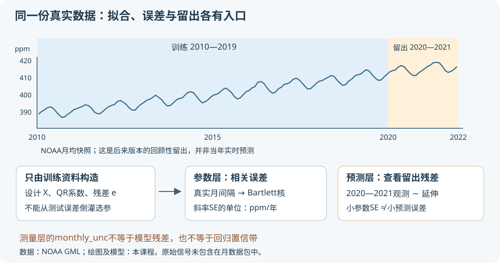

本页目录
真实数据项目 · CO₂趋势：标准误很小，为什么预测仍会失败？
先修：矩阵扰动与范数、SVD与数值稳定性、渐近统计工具。本科起点可先读线性回归。同一数据的测量过程见物理项目：干空气、定标与月均值。
1. 先提出能由这份数据回答的问题
我们手中是Mauna Loa的真实月平均CO₂记录，不是人为给直线加噪声。任务是：用2010—2019年训练一个趋势加季节模型，再查看它在2020—2021年的误差。与此同时，比较“估计斜率的不确定性”和“下一月预测的不确定性”为什么不是一个数。
我们不从单站的ppm变化直接反推全球排放。站点代表性、输运、碳源和碳汇是另一层物理模型；数学拟合不能越过这些缺失信息。
本讲采用NOAA于2026-08-05创建的固定数据快照，分析1990—2021的384个月。它已经经过校准、背景空气选择、日/月聚合与月中心校正，不是原始仪器信号。2020—2021只在本课程拟合步骤中留出；上游数据是后来修订的快照，所以这项练习不能宣称为当年实时预测的回测。
| 文件 | 你可以核验什么 |
|---|---|
| 未改写的上游TXT | 原始列、引用要求、插值标记和创建时间 |
| 384月CSV / JSON | 每个拟合输入，含年月索引与质量解释 |
| 版本清单 | 原文件SHA-256、抓取时间、量标与来源 |
| 复算说明 | 如何从固定文件重新提取并独立检验 |
数据由NOAA GML提供，本课程处理结果不代表NOAA官方分析。NOAA数据不受课程原创版权声明覆盖。完整原文含早期Scripps资料，本项目分析窗口只用NOAA时期。
2. 读列名之前，先读单位与质量标记
观测\(y_i\)的单位是干空气摩尔分数ppm，即\(10^6n_{\rm CO_2}/n_{\rm dry\ air}\)；不是质量浓度、不是ppm/年，也不是排放质量。时间\(t_i\)用文件给出的decimal year，月份索引\(k_i=12\times\text{year}+\text{month}-1\)用于判断真正的月间隔。
days是有效天数，daily_std描述每日均值的波动，monthly_unc是官方月平均不确定度，三者用途不同。官方unc依据天气系统经过站点时的日际变化，并考虑相邻日相关，不能机械套\(\mathrm{std}/\sqrt{\mathrm{days}}\)。它也不是跨十年回归的残差标准差。
原文件以负数标注插值或早期未知质量信息；不能把这些值平方后当权重。本选定子集384个月质量列均非负。实验可提高“最少有效天数”查看筛选敏感性，报告剔除数；这种筛选改变样本，不自动提高推断可靠性。
没有使用官方deseasonalized列参与拟合。它与monthly average来自同一资料，且去季节处理使用邻近多个年份，不能把两列当成两组独立观测或未经说明地用于预测评估。
3. 同一数据，比较三个明确的均值模型
固定训练结束于2019，中心时刻\(t_0=(\text{start}+2020)/2\)。令\(u_i=t_i-t_0\)，分别拟合：
参数数目分别为2、6、7。a以ppm计，b以ppm/年计，e以ppm/年²计；正弦、余弦的自变量无量纲，t中的一年对应一个周期。这里的b是去掉季节项后，趋势在\(t_0\)的局部斜率；曲率模型在别的时刻斜率为\(b+2eu\)。
正弦项是对季节变化的统计近似，不等于证明每一项来自某个特定生态机制。多一个参数必然使训练最小二乘误差不增，却未必改善留出表现。
把每一行基函数写成\(x_i^T\)，组成设计矩阵X。最小二乘解满足
当X满列秩时，形式解为\((X^TX)^{-1}X^Ty\)。但程序不直接对大日期构造正规方程：先中心化时间，再用带重正交的QR分解\(X=QR\)，求解
中心化不改变模型所能表示的函数，只改善列的尺度；QR也不会让不可辨识的模型突然变得可辨识，所以程序还检查秩。
4. 从一个误差模型，推导一个标准误
假设\(y=X\theta_*+\varepsilon\)，\(E(\varepsilon\mid X)=0\)。记\(A=(X^TX)^{-1}\)，则
其中\(\Omega=\operatorname{Cov}(\varepsilon\mid X)\)。这是解释各种标准误的共同起点。
若进一步假设误差独立且同方差，\(\Omega=\sigma^2I\)，就有
斜率标准误是其b对应对角元素的平方根。只有附加正态等条件才有熟悉的精确t推断；只算出一个标准误不等于已经验证这些条件。
真实月度残差常连续数月偏高或偏低，此时\(\Omega\)并非对角阵。本页同时算Bartlett/Newey–West形式的HAC协方差。定义影响向量
并使用明确的有限样本修正约定
L是日历月滞后，实验取0—24。L=0仍是异方差稳健的对角“肉”矩阵，通常不等于iid估计；HAC也不保证总比iid标准误大，不同滞后的相关项可能相互抵消。
这个核为什么不会随意产生负方差？\(K_L(k_i-k_j)\)等于两个长度\(L+1\)整数窗口的重叠比例，因此是窗口指示向量的Gram矩阵；把缺失月的\(w_k\)记为0后，双和可写成若干窗口和的外积之和。故精确算术下\(\widehat V_{\rm HAC}\)半正定。程序按真实\(k_i-k_j\)计算，筛掉某个月后不会把其两侧月份误认为相隔一个月。
这只是有限样本构造的性质。其渐近可靠性还需要均值模型正确、误差外生、设计可辨、适当矩条件与弱依赖，以及带宽随样本量适当增长等条件；本页手动选L和几幅残差图没有证明这些条件。尤其HAC不能修复错误趋势、结构变化或与误差有关的缺失机制，也不是未知高阶误差的上界。

5. 先预测，再观察这三个模型的分歧
图为突出变化，纵轴显示\(\mathrm{CO_2}-400\) ppm；400只是画图参考值，输入数据与表格仍是原始ppm数值。
无脚本也能核对：固定训练2010—2019、120个月，留出24个月，不额外按天数筛选，L=12：
| 模型 | b（ppm/年） | iid标准误 | HAC标准误 | 训练RMSE（ppm） | 留出RMSE（ppm） |
|---|---|---|---|---|---|
| 直线 | 2.377975 | 0.072769 | 0.060946 | 2.281819 | 2.353789 |
| 季节 | 2.428153 | 0.015350 | 0.036299 | 0.471230 | 0.423543 |
| 季节＋曲率 | 2.428153 | 0.013595 | 0.024161 | 0.415535 | 0.649136 |
加入曲率降低了训练误差和这里的标准误，但留出误差反而增加。这不是证明曲率永远错误，而是一个实际反例：参数标准误小，不保证模型形式正确，也不保证延伸预测准确。
默认季节模型的相邻月残差相关约0.687。它是实际相邻月对的Pearson相关，提示iid假设值得怀疑，不是因果证据。改L只改变协方差估计，不改变拟合系数或预测曲线。
残差图上下两条官方unc线仅用于比较量级；它们不是这条回归曲线的置信带。也不要因为残差超过unc就认定测量出错：短均值模型可能根本没有描述相应的时间变化。
6. 交付一份可以被别人复算的报告
报告应写明快照版本、训练/留出日期、筛选规则、设计列、参数单位、QR方法、HAC带宽与修正因子。展示三个模型的残差及留出误差，并解释哪一个结论来自数据、哪一个依赖误差假设。
源码用NumPy从上游TXT独立解析，再以SVD求解、完整日历核矩阵计算协方差，与网页的QR和逐对累加对照。还检查改变留出数据不会改变训练系数、负质量标记不会变成有效权重，以及删月后的滞后不能按存储行号压缩。
反复看留出误差来选择模型，会把它变成调参集。本页用于认识这一机制；若要报告独立泛化表现，需要预先固定方案并另设未使用的评估资料。本讲没有新增真实学习者试用结果，也没有把这次历史拟合当成NOAA的预测产品。
7. 两道迁移题
题一。 筛掉二月后，数组相邻两行变成一月和三月。L=1时，HAC是否应把这两行的交叉项计入？若把真实残差过程写为\(\varepsilon_t=z_t-z_{t-1}\)、z独立同方差，稳健标准误是否必然大于iid标准误？
查看日历间隔与负相关反例
一月到三月相隔2个月，\(K_1(2)=0\)，不计入；若按数组相邻错误地用\(K_1(1)=1/2\)，就加入了不存在的一月滞后项。对差分噪声，\(\operatorname{Var}\varepsilon_t=2\sigma_z^2\)、\(\operatorname{Cov}(\varepsilon_t,\varepsilon_{t-1})=-\sigma_z^2\)。负相关可能降低某些线性估计量的方差，所以HAC不必比iid大；仍须针对实际设计与核计算，不能只看一个lag1符号就决定所有系数。
题二。 某报告说“斜率标准误为0.015 ppm/年，所以下一月CO₂误差不会超过0.015 ppm”，又把2 ppm/年说成全球排放2 Gt/年。指出两处逻辑断裂。为何更复杂模型的训练误差降低并不能修补它们？
查看参数、预测与物理单位
斜率标准误的单位是ppm/年，下一月观测误差的单位是ppm；预测还依赖其他系数的协方差、未来噪声、模型误设与时间相关。标准误本身也不是确定上界。ppm是摩尔分数，Gt是质量，需要大气总量、空间代表性以及源汇/输运模型才能相连。增加参数仅扩大拟合函数空间，不能凭空提供这些物理信息或验证统计假设。
速查与资料
同一测量产品有不同层次的误差：月均unc、模型残差、参数标准误、未来预测误差，不能混用。原始说明见NOAA月均值与不确定度及量标变更记录；HAC方法与其渐近理论入口见Newey与West原始工作论文。本页明确给出实际实现的有限样本公式，没有宣称证明完整HAC一致性定理。核查：2026-09-09。